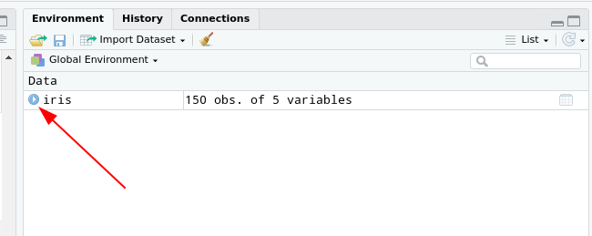
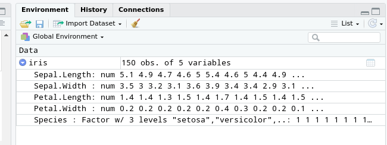

df <- data.frame(a = 1:3,
b = c(TRUE, FALSE, TRUE),
c = c('a','b','c'))
df a b c
1 1 TRUE a
2 2 FALSE b
3 3 TRUE cWie alle anderen Programme zur statistischen Auswertung hat R natürlich neben den Vektoren auch rechteckige Datenformate.
Das typische rechteckige Datenformat in base R ist der data.frame. Im Prinzip nichts anderes, als spaltenweise zusammengeklebte Vektoren. Der Konstruktor für ein solches Objekt ist die gleichnamige Funktion, die die Spalten als benannte Argumente nimmt:
df <- data.frame(a = 1:3,
b = c(TRUE, FALSE, TRUE),
c = c('a','b','c'))
df a b c
1 1 TRUE a
2 2 FALSE b
3 3 TRUE cDas Indizieren im Datensatz geht dann am lesbarsten, durch das Angeben der gewünschten Spalte mit dem $-Operator und der Auswahl der Zeile durch den schon bekannten []-Operator.
df$c[2] ## 2. Wert in der 'c'-Spalte.[1] "b"
Wie könnte ich den 3. Wert in der b-Spalte indizieren?
df$b[3]
Der iris-Datensatz ist ein im Grundumfang von R mitgelieferter Datensatz, der historische botanische Daten nach Anderson (1935) enthält.
iris Sepal.Length Sepal.Width Petal.Length
1 5.1 3.5 1.4
2 4.9 3.0 1.4
3 4.7 3.2 1.3
4 4.6 3.1 1.5
5 5.0 3.6 1.4
6 5.4 3.9 1.7
7 4.6 3.4 1.4
8 5.0 3.4 1.5
9 4.4 2.9 1.4
10 4.9 3.1 1.5
11 5.4 3.7 1.5
12 4.8 3.4 1.6
13 4.8 3.0 1.4
14 4.3 3.0 1.1
15 5.8 4.0 1.2
16 5.7 4.4 1.5
17 5.4 3.9 1.3
18 5.1 3.5 1.4
19 5.7 3.8 1.7
20 5.1 3.8 1.5
21 5.4 3.4 1.7
22 5.1 3.7 1.5
23 4.6 3.6 1.0
24 5.1 3.3 1.7
25 4.8 3.4 1.9
26 5.0 3.0 1.6
27 5.0 3.4 1.6
28 5.2 3.5 1.5
29 5.2 3.4 1.4
30 4.7 3.2 1.6
31 4.8 3.1 1.6
32 5.4 3.4 1.5
33 5.2 4.1 1.5
34 5.5 4.2 1.4
35 4.9 3.1 1.5
36 5.0 3.2 1.2
37 5.5 3.5 1.3
38 4.9 3.6 1.4
39 4.4 3.0 1.3
40 5.1 3.4 1.5
41 5.0 3.5 1.3
42 4.5 2.3 1.3
43 4.4 3.2 1.3
44 5.0 3.5 1.6
45 5.1 3.8 1.9
46 4.8 3.0 1.4
47 5.1 3.8 1.6
48 4.6 3.2 1.4
49 5.3 3.7 1.5
50 5.0 3.3 1.4
51 7.0 3.2 4.7
52 6.4 3.2 4.5
53 6.9 3.1 4.9
54 5.5 2.3 4.0
55 6.5 2.8 4.6
56 5.7 2.8 4.5
57 6.3 3.3 4.7
58 4.9 2.4 3.3
59 6.6 2.9 4.6
60 5.2 2.7 3.9
61 5.0 2.0 3.5
62 5.9 3.0 4.2
63 6.0 2.2 4.0
64 6.1 2.9 4.7
65 5.6 2.9 3.6
66 6.7 3.1 4.4
67 5.6 3.0 4.5
68 5.8 2.7 4.1
69 6.2 2.2 4.5
70 5.6 2.5 3.9
71 5.9 3.2 4.8
72 6.1 2.8 4.0
73 6.3 2.5 4.9
74 6.1 2.8 4.7
75 6.4 2.9 4.3
76 6.6 3.0 4.4
77 6.8 2.8 4.8
78 6.7 3.0 5.0
79 6.0 2.9 4.5
80 5.7 2.6 3.5
81 5.5 2.4 3.8
82 5.5 2.4 3.7
83 5.8 2.7 3.9
84 6.0 2.7 5.1
85 5.4 3.0 4.5
86 6.0 3.4 4.5
87 6.7 3.1 4.7
88 6.3 2.3 4.4
89 5.6 3.0 4.1
90 5.5 2.5 4.0
91 5.5 2.6 4.4
92 6.1 3.0 4.6
93 5.8 2.6 4.0
94 5.0 2.3 3.3
95 5.6 2.7 4.2
96 5.7 3.0 4.2
97 5.7 2.9 4.2
98 6.2 2.9 4.3
99 5.1 2.5 3.0
100 5.7 2.8 4.1
101 6.3 3.3 6.0
102 5.8 2.7 5.1
103 7.1 3.0 5.9
104 6.3 2.9 5.6
105 6.5 3.0 5.8
106 7.6 3.0 6.6
107 4.9 2.5 4.5
108 7.3 2.9 6.3
109 6.7 2.5 5.8
110 7.2 3.6 6.1
111 6.5 3.2 5.1
112 6.4 2.7 5.3
113 6.8 3.0 5.5
114 5.7 2.5 5.0
115 5.8 2.8 5.1
116 6.4 3.2 5.3
117 6.5 3.0 5.5
118 7.7 3.8 6.7
119 7.7 2.6 6.9
120 6.0 2.2 5.0
121 6.9 3.2 5.7
122 5.6 2.8 4.9
123 7.7 2.8 6.7
124 6.3 2.7 4.9
125 6.7 3.3 5.7
126 7.2 3.2 6.0
127 6.2 2.8 4.8
128 6.1 3.0 4.9
129 6.4 2.8 5.6
130 7.2 3.0 5.8
131 7.4 2.8 6.1
132 7.9 3.8 6.4
133 6.4 2.8 5.6
134 6.3 2.8 5.1
135 6.1 2.6 5.6
136 7.7 3.0 6.1
137 6.3 3.4 5.6
138 6.4 3.1 5.5
139 6.0 3.0 4.8
140 6.9 3.1 5.4
141 6.7 3.1 5.6
142 6.9 3.1 5.1
143 5.8 2.7 5.1
144 6.8 3.2 5.9
145 6.7 3.3 5.7
146 6.7 3.0 5.2
147 6.3 2.5 5.0
148 6.5 3.0 5.2
149 6.2 3.4 5.4
150 5.9 3.0 5.1
Petal.Width Species
1 0.2 setosa
2 0.2 setosa
3 0.2 setosa
4 0.2 setosa
5 0.2 setosa
6 0.4 setosa
7 0.3 setosa
8 0.2 setosa
9 0.2 setosa
10 0.1 setosa
11 0.2 setosa
12 0.2 setosa
13 0.1 setosa
14 0.1 setosa
15 0.2 setosa
16 0.4 setosa
17 0.4 setosa
18 0.3 setosa
19 0.3 setosa
20 0.3 setosa
21 0.2 setosa
22 0.4 setosa
23 0.2 setosa
24 0.5 setosa
25 0.2 setosa
26 0.2 setosa
27 0.4 setosa
28 0.2 setosa
29 0.2 setosa
30 0.2 setosa
31 0.2 setosa
32 0.4 setosa
33 0.1 setosa
34 0.2 setosa
35 0.2 setosa
36 0.2 setosa
37 0.2 setosa
38 0.1 setosa
39 0.2 setosa
40 0.2 setosa
41 0.3 setosa
42 0.3 setosa
43 0.2 setosa
44 0.6 setosa
45 0.4 setosa
46 0.3 setosa
47 0.2 setosa
48 0.2 setosa
49 0.2 setosa
50 0.2 setosa
51 1.4 versicolor
52 1.5 versicolor
53 1.5 versicolor
54 1.3 versicolor
55 1.5 versicolor
56 1.3 versicolor
57 1.6 versicolor
58 1.0 versicolor
59 1.3 versicolor
60 1.4 versicolor
61 1.0 versicolor
62 1.5 versicolor
63 1.0 versicolor
64 1.4 versicolor
65 1.3 versicolor
66 1.4 versicolor
67 1.5 versicolor
68 1.0 versicolor
69 1.5 versicolor
70 1.1 versicolor
71 1.8 versicolor
72 1.3 versicolor
73 1.5 versicolor
74 1.2 versicolor
75 1.3 versicolor
76 1.4 versicolor
77 1.4 versicolor
78 1.7 versicolor
79 1.5 versicolor
80 1.0 versicolor
81 1.1 versicolor
82 1.0 versicolor
83 1.2 versicolor
84 1.6 versicolor
85 1.5 versicolor
86 1.6 versicolor
87 1.5 versicolor
88 1.3 versicolor
89 1.3 versicolor
90 1.3 versicolor
91 1.2 versicolor
92 1.4 versicolor
93 1.2 versicolor
94 1.0 versicolor
95 1.3 versicolor
96 1.2 versicolor
97 1.3 versicolor
98 1.3 versicolor
99 1.1 versicolor
100 1.3 versicolor
101 2.5 virginica
102 1.9 virginica
103 2.1 virginica
104 1.8 virginica
105 2.2 virginica
106 2.1 virginica
107 1.7 virginica
108 1.8 virginica
109 1.8 virginica
110 2.5 virginica
111 2.0 virginica
112 1.9 virginica
113 2.1 virginica
114 2.0 virginica
115 2.4 virginica
116 2.3 virginica
117 1.8 virginica
118 2.2 virginica
119 2.3 virginica
120 1.5 virginica
121 2.3 virginica
122 2.0 virginica
123 2.0 virginica
124 1.8 virginica
125 2.1 virginica
126 1.8 virginica
127 1.8 virginica
128 1.8 virginica
129 2.1 virginica
130 1.6 virginica
131 1.9 virginica
132 2.0 virginica
133 2.2 virginica
134 1.5 virginica
135 1.4 virginica
136 2.3 virginica
137 2.4 virginica
138 1.8 virginica
139 1.8 virginica
140 2.1 virginica
141 2.4 virginica
142 2.3 virginica
143 1.9 virginica
144 2.3 virginica
145 2.5 virginica
146 2.3 virginica
147 1.9 virginica
148 2.0 virginica
149 2.3 virginica
150 1.8 virginicaDas ist natürlich ein bisschen unübersichtlich, wie kann man damit umgehen?
Wenn man iris explizit in das Environment nimmt, kann man die Oberfläche von RStudio nutze, um sich einen Überblick zu verschaffen 1
1 Dabei nutzt die RStudio-IDE aber nur die str()(für structure)-Funktion.
iris <- iris

Die summary-Funktion, die genau das macht, was ihr Name suggeriert:
summary(iris) Sepal.Length Sepal.Width Petal.Length
Min. :4.300 Min. :2.000 Min. :1.000
1st Qu.:5.100 1st Qu.:2.800 1st Qu.:1.600
Median :5.800 Median :3.000 Median :4.350
Mean :5.843 Mean :3.057 Mean :3.758
3rd Qu.:6.400 3rd Qu.:3.300 3rd Qu.:5.100
Max. :7.900 Max. :4.400 Max. :6.900
Petal.Width Species
Min. :0.100 setosa :50
1st Qu.:0.300 versicolor:50
Median :1.300 virginica :50
Mean :1.199
3rd Qu.:1.800
Max. :2.500 Wir wollen für diesen Datensatz jetzt die folgenden Schritte der Auswertung vollziehen:
Ausschluss der Blumen, die breitere Blütenblätter als das 1.5-fache der mittleren Blütenblätter haben und Kelche, die kürzer als das Mittel der Kelchlänge sind
Darstellung der Mittelwerte und Streuungen der Blütenblattlänge und -breite pro verbleibende Spezies als Tabelle
df <- iris[iris$Petal.Width <= 1.5 * mean(iris$Petal.Width) &
iris$Sepal.Length >= mean(iris$Sepal.Length),]
means <- aggregate(cbind(df$Petal.Length,df$Petal.Width),
by = list(Species = df$Species),
FUN = mean)
sds <- aggregate(cbind(df$Petal.Length,df$Petal.Width),
by = list(Species = df$Species),
FUN = sd)
tab <- data.frame(means, sds[,2:3])
names(tab)[2:5] = c('m_Length', 'm_Width', 'sd_Length', 'sd_Width')
tab Species m_Length m_Width sd_Length
1 versicolor 4.560 1.424 0.2783882
2 virginica 5.375 1.500 0.3862210
sd_Width
1 0.14798649
2 0.08164966Die selbe Aufgabe wie gerade, jetzt mit dem tidyverse:
library(tidyverse)
iris %>%
filter(Petal.Width <= 1.5 * mean(Petal.Width) &
Sepal.Length >= mean(Sepal.Length)) %>%
group_by(Species) %>%
summarise(m_Length = mean(Petal.Length),
sd_Length = sd(Petal.Length),
m_Width = mean(Petal.Width),
sd_Width = sd(Petal.Width))# A tibble: 2 × 5
Species m_Length sd_Length m_Width sd_Width
<fct> <dbl> <dbl> <dbl> <dbl>
1 versicolor 4.56 0.278 1.42 0.148
2 virginica 5.38 0.386 1.5 0.0816Das tidyverse ist eine Sammlung von Paketen, deren Hauptziel es ist, Datenaufbereitung in R intuitiver und leichter lesbar zu machen.
Ein zentrales Element dabei ist der %>%-Operator, die sogenannte Pipeline2. Beim Skript-Lesen und -Schreiben kann man sich diese am Besten als ‘dann’ vorstellen
2 base-R hat mit Version 4.1 auch eine native pipe eingeführt (|>), da wir aber eh das tidyverse nutzen bleiben wir bei der magrittr-pipe
Mit ihrer Hilfe werden Aufbereitungsschritte in einer stringenten Reihe an Operationen formuliert, die sich am Besten als Satz verstehen lassen.
Da die Funktionen im tidyverse alle mit einfachen Verben benannt sind, lässt sich die Operation von eben auch so lesen.
1library(tidyverse)
2iris %>%
3 filter(Petal.Width <= 1.5 * mean(Petal.Width) &
Sepal.Length >= mean(Sepal.Length)) %>%
4 group_by(Species) %>%
5 summarise(m_Length = mean(Petal.Length),
sd_Length = sd(Petal.Length),
m_Width = mean(Petal.Width),
sd_Width = sd(Petal.Width))tidyverse geladen werden
iris, dann …
Zweite Beispielaufgabe:
Wir möchten für den iris-Datensatz:
Eine Spalte hinzufügen, die die z-transformierte Blattlänge enthält
Eine Spalte hinzufügen, die als character das Ergebnis eines Mediansplits der gerade erstellten Variable enthält
Einen Datensatz erstellen, der nur die Spezies, die z-Transformierte und die Mediansplit-Variable enthält
Die Häufigkeiten der Kombinationen von Mediansplit-Gruppe und Spezies auszählen
1df <- iris %>%
2 mutate(
3 z_length = (Petal.Length-mean(Petal.Length))/sd(Petal.Length),
4 med_split = case_when(
5 z_length >= median(z_length) ~ 'upper',
6 T ~ 'lower')) %>%
7 select(Species, z_length, med_split)df. Nimm dazu iris, dann …
case_when eine Spalte anlegst, die …
Species, z_length und med_split aus.
Hat das geklappt?
Wie könnte ich das überprüfen?
summary(df) Species z_length
setosa :50 Min. :-1.5623
versicolor:50 1st Qu.:-1.2225
virginica :50 Median : 0.3354
Mean : 0.0000
3rd Qu.: 0.7602
Max. : 1.7799
med_split
Length:150
Class :character
Mode :character
Jetzt noch Häufigkeiten auszählen:
df, dann …
Species und med_split, dann…
`summarise()` has grouped output by 'Species'.
You can override using the `.groups` argument.# A tibble: 4 × 3
# Groups: Species [3]
Species med_split n
<fct> <chr> <int>
1 setosa lower 50
2 versicolor lower 25
3 versicolor upper 25
4 virginica upper 50Machen Sie sich mit dem swiss-Datensatz vertraut. Lesen Sie dazu auch die Hilfeseite zu dem Datensatz, diese können Sie mit ?swiss aufrufen. Erstellen Sie mit Hilfe einer pipeline einen Datensatz, der…
nur Provinzen enthält, deren Einwohner zu mehr als 10% und weniger als 35% Bestnoten bei der Armee-Untersuchung erhalten haben
nur den Anteil der männlichen Population in der Landwirtschaft, die Kindersterblichkeit, das Bildungsniveau und den Anteil der katholischen Familien enthält
eine numerische Variable enthält, die für die so ausgewählten Fälle einen Mediansplit der Kindersterblichkeit codiert.
eine Variable enthält, die angibt, ob der Anteil der männlichen Population an der Landwirtschaft über oder unter dem Mittelwert (mean) liegt
Lassen Sie sich die absoluten Häufigkeiten der Kombination der beiden gerade erstellten Variablen ausgeben.
Zusatz: Erstellen Sie anschließend eine kurze pipeline, die den gerade erstellten Datensatz mit dem Absteigenden Bildungsniveau als ersten Sortierschlüssel und dem aufsteigenden Anteil katholischer Familien als zweitem Schlüssel sortiert. Nutzen Sie dafür die Hilfeseite der arrange-Funktion.
library(tidyverse)
df <- swiss %>%
filter(Education > 10,
Education < 35) %>%
select(Agriculture,
Infant.Mortality,
Education,
Catholic) %>%
mutate(
mediansplit_mortality = case_when(
Infant.Mortality >= median(Infant.Mortality) ~ 1,
T ~ -1),
meansplit_agriculture = case_when(
Agriculture > mean(Agriculture) ~ 'high',
Agriculture < mean(Agriculture) ~ 'low',
T ~ 'mean'
)
)
df %>%
count(mediansplit_mortality,meansplit_agriculture) mediansplit_mortality meansplit_agriculture n
1 -1 high 4
2 -1 low 4
3 1 high 4
4 1 low 4df2 <- df %>%
arrange(-Education,
Catholic)